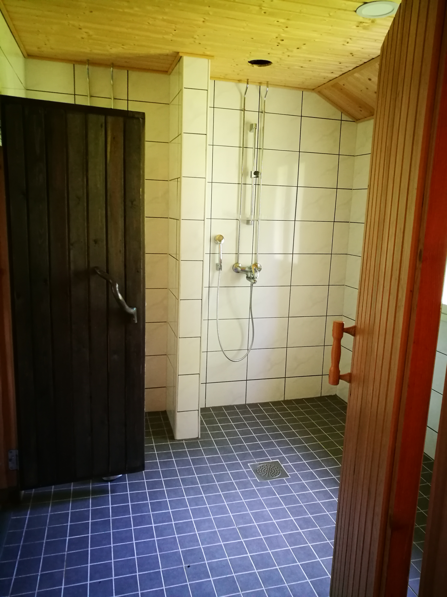
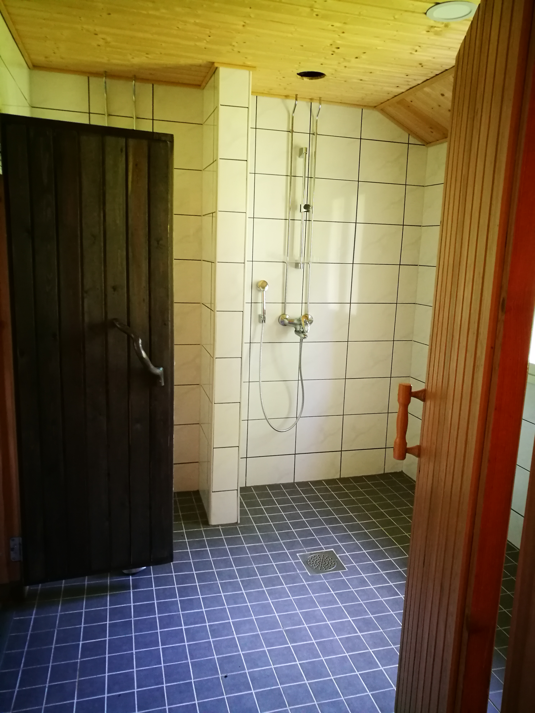

Esittely
Koskenäyräs on upea hirsilinna Kymijoen Kokonkosken rannalla. Koskenäyräs on oiva paikka järjestää suuri juhlia ja tapahtumia, kokouksia, saunailtoja. Tilat sopivat myös pelkkään majoitukseen. Rannalta on mahdollisuus kalastaa Siikakosken kalastusluvalla.
Tontilla on asuinrakennus majoitus-, kokous-, sekä juhlatilaisuuksiin. Aivan joen tuntumassa on rantasauna ja grillikatos.
Pihapiiri on täysin omassa rauhassa kaukana kiireestä ja melusta ja kuitenkin lähellä Kotkan kaupunkia ja hyviä kulkuyhteyksiä.
Kymijoen Siikakoskenhaara tarjoaa upeat mahdollisuudet esimerkiksi kalastukselle, koskenlaskulle tai luonnossa liikkumiselle.
Helsingistä on reilun tunnin ajomatka sekä Kotkan kaupungin keskusta sijaitsee noin 10km päässä.
Juhlien ja tapahtumien maksimikapasiteetti on 80 henkeä. Lomamökkivuokraus max. 10 hengelle.
Tarjoukset ja lähiaikojen vapaat päivät ilmoitamme facebook -sivuillamme.
Tervetuloa!
Piha
Tontti on joen rannassa upeiden koskimaisemien kera ja kokoa tontilla on reilun hehtaarin verran. Rantaviivaa on muutaman sadan metrin verran. Pihalla on tilaa pystyttää iso teltta juhlia sekä tapahtumia varten ja pysäköinti tilaa löytyy useammalle kymmenelle autolle. Rannasta löytyy myös grillikatos sekä pieni kota joen äyräällä.


Päärakennus
Päärakennus on yli 500 neliön hirsilinna, joka soveltuu mainiosti juhlien, kokouksien ja tapahtumien järjestämiseen. Rakennuksen ensimmäinen kerros on tarkoitettu pääsääntöisesti juhla- sekä kokoustilaksi ja toinen kerros on majoituskäytössä. Tilat ja kalusteet järjestetään käyttötarkoituksen ja asiakkaiden toiveiden mukaisesti. Rakennuksessa on myös ilmainen wi-fi asiakkaiden käytössä.
Ruokasaliin mahtuu samanaikaisesti noin 40 henkilöä. Tilaa voidaan käyttää juhlien ruokailutilana tai kokoustilana.
Majoittujilla on mahdollisuus kalastaa rannalta Siikakosken kalastusluvalla.
Ensimmäinen kerros
- Ruokasali
- Keittiö
- Olohuone
- Aula
- 4 makuuhuonetta
- 3 wc:ta
- suihku ja sauna
- pukuhuone
Toinen kerros
- 5 makuuhuonetta
- 2 wc:ta
- 2 suihkua
- pukeutumishuone
- tv aula
- oleskelutila


Rantasauna
Rantasauna sijaitsee vain muutaman metrin päässä upesta Kymijoesta. Tiloihin mahtuu 10-15 henkilöä samanaikaisesti ja sopii mainiosti niin yritys- kuin yksityisasiakkaille. Rantasaunalta löytyy pieni keittiö, takkahuone, oleskelutila, pukuhuone sekä tietysti suihkut ja sauna puu- ja sähkökiukaalla. Rannasta pääsee helposti uimaan virtaamattomaan poukamaan.

 

Yhteystiedot
Hinnat
Juhlat
Ark. 1400€
Pe-La 1750€
La-Su 1750€
Pe-Su 2150€
Juhlatilavuokrausten aikavälit sovitaan jokaisen asiakkaan tarpeiden mukaan. Varaukset tästä:
info@koskenayras.fiKokoukset
Ark. 400€
Pe 500€
La 600€
Su 600€
Kokoustilavuokra sijoittuu klo 08-16 väliselle ajalle. Muista ajoista voidaan sopia erikseen. Varaukset tästä:
info@koskenayras.fiRantasauna
Ark. 200€
Pe 250€
La 250€
Su 250€
Rantasaunan vuokra sijoittuu klo 17-01 väliselle ajalle. Muista ajoista voidaan sopia erikseen. Varaukset tästä:
info@koskenayras.fiLomamökki varaukset
Majoituskäyttön sisäänkirjautumisaika on klo 15:00 ja uloskirjautuminen klo 12:00
Tutustu tarkemmin ja varaa:
Tai varaa lomamökki suoraan tästä: